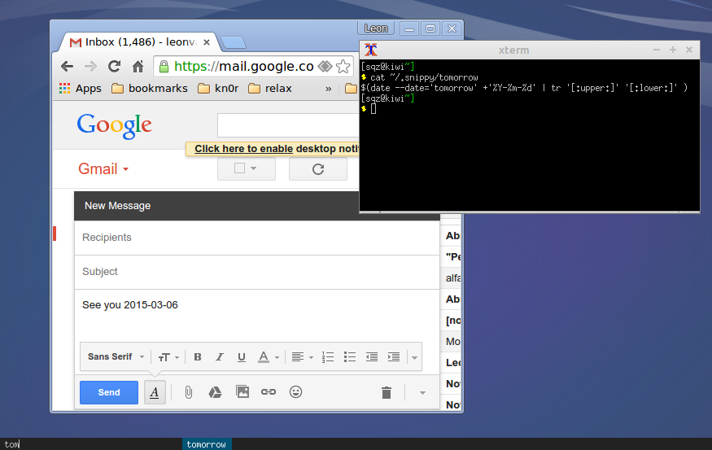

Everything has autocompletion, from browsers to console to editors. However, different snippet-files in different folders can become a pain to manage. Textfile snippets are portable, but autocompletion isn't.
Snippy to the rescue!

NOTE: the autocompletion-line in the bottom of the screenshot was invoked by pressing superkey-TAB. It allows you to paste a snippet into your current active browser or console application.
curl -L "http://tinyurl.com/o9d6ch5" > snippy.sh
chmod 755 snippy.sh
./snippy.sh
Snippy is a text expander which was mentioned in this thread. We use this improved version which makes things easier to use and install.
You need a directory with snippets, empty files, or symlinks to snippets in ~/.snippy Here's how mine looks :
$ ls ~/.snippy | more
total 92K
drwxrwxrwx 1 sqz sqz 12K Mar 5 10:59 .
drwxrwxrwx 1 sqz sqz 52K Feb 27 19:46 ..
-rwxrwxrwx 1 sqz sqz 0 Mar 5 10:59 tech@somelong.email.com
-rwxrwxrwx 1 sqz sqz 69 Dec 12 10:01 yesterday
lrwxrwxrwx 1 sqz sqz 72 Dec 3 10:48 signature-foocompany.txt -> ../.alpine/signature-foocompany.txt
lrwxrwxrwx 1 sqz sqz 72 Dec 3 10:48 php-classhead-companyx.php -> ../.vim/snippet/php/companyx.php
-rwxrwxrwx 1 sqz sqz 58 Dec 2 15:57 address-sweden
-rwxrwxrwx 1 sqz sqz 27 Nov 14 16:24 commit-minor
-rwxrwxrwx 1 sqz sqz 33 Nov 14 15:57 commit-content
-rwxrwxrwx 1 sqz sqz 33 Nov 14 15:57 report-manager
-rwxrwxrwx 1 sqz sqz 50 Nov 14 12:23 date
--More--
They can be empty ('tech@somelong.email.com') just for the sake of autocompletion. Or they could automate certain laborous reports or stats, since it parses bash from the snippets:
$ cat ~/.snippy/tomorrow
$(date --date='tomorrow' +'%Y-%m-%d' | tr '[:upper:]' '[:lower:]' )
This would turn 'see you tomorrow' into 'see you xxxx-xx-xx' (date of tomorrow) Note the '$(' and ')', this is inline bash execution.
$ cat ~/.snippy/commit-minor
minor fixes / improvements
This makes repetitive or protocolized commit messages a breeze for git-console or webinterface (instead of '++' or 'update')
$ cat ~/.snippy/report-manager
$(curl -v -X GET "http://company.foo.com/api/v1.0/revenue?fmt=pretty-json" | grep "total_lasagna" | sed 's/^[a-zA-Z0-9 ]/g')
Managers like numbers. Therefore, generating reports based on REST-api urls might come in handy as well, to keep your manager happy when writing an email. Of course, the above is a fictive call to get a total amount of sold lasagnas. If you happen to work in a company like that, email me :)
Last but least, you could also just enter plain bash. For example typing 'ls -la /tmp/foo' after launching the snippy-key, would get its output pasted into your browser.
Every modern window manager supports binding applications to a keyboardshortcut. Alt-tab could be a nice shortcut.
If you like to keep your dotfiles in a gitrepo, continue reading. Use xbindkeys, so you can share my keyboardbindings across (different) linux distros. Just make sure to commit .bindkeysrc to your repo like so:
~/.xbindkeysrc
# superkey+tab (hitting windows-key + tab launches snippy)
"/home/sqz/bin/snippy.sh"
Mod4 + Tab
This would only require starting xbindkeys as a default startup application in your windowmanager. (Instead of re-configuring your keybindings manually for every computer)
As mentioned before I use an improved version of this original demo: